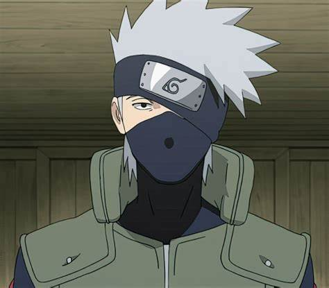
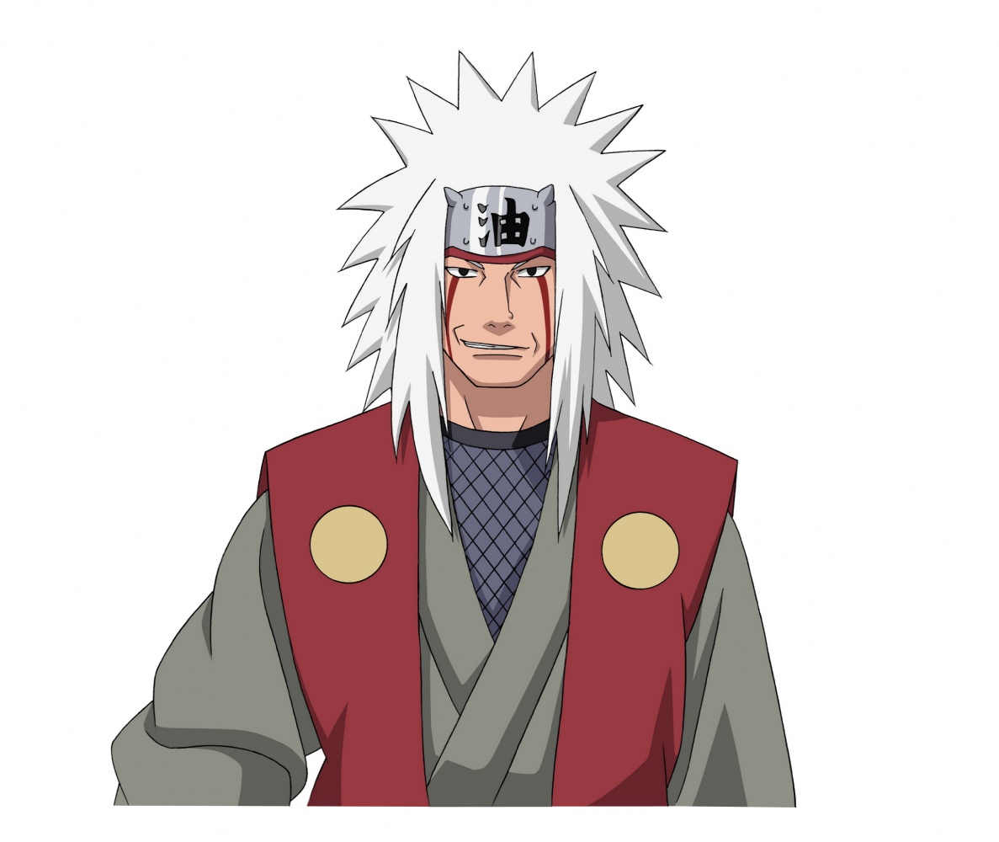
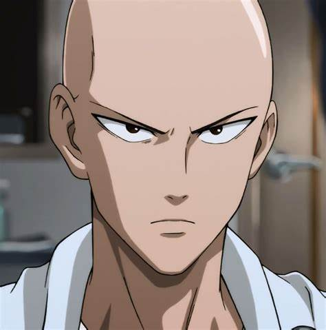
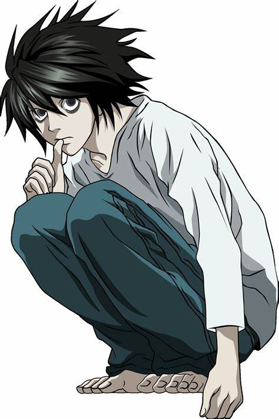
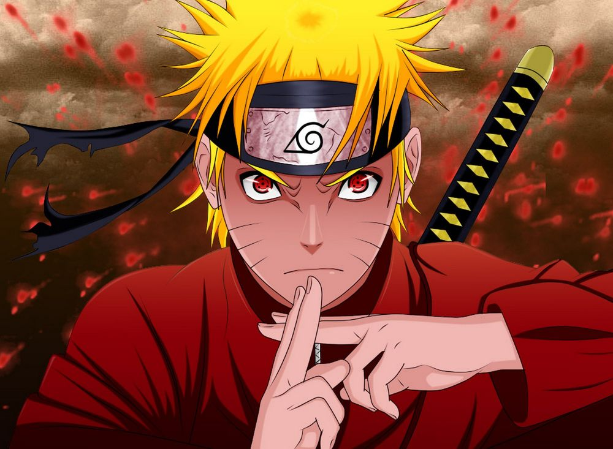
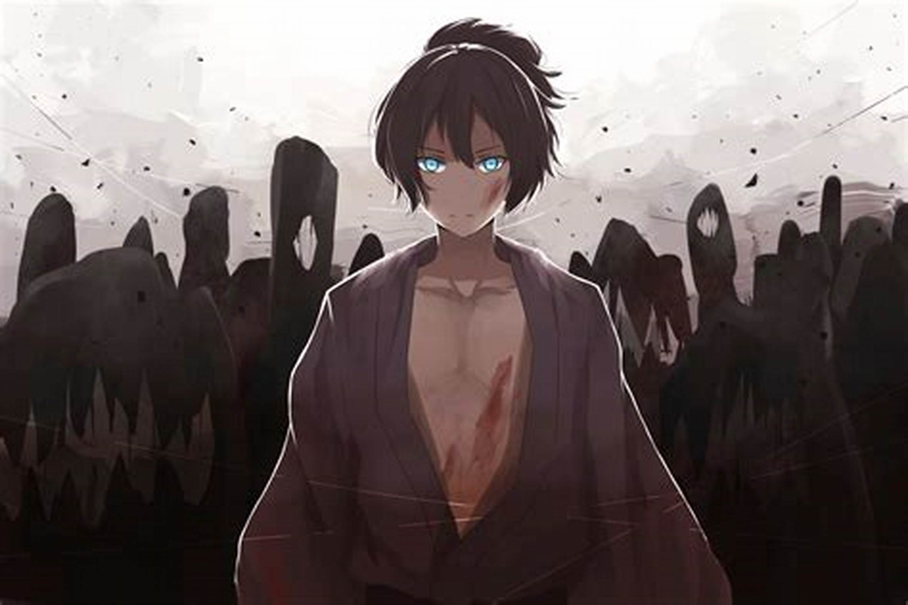
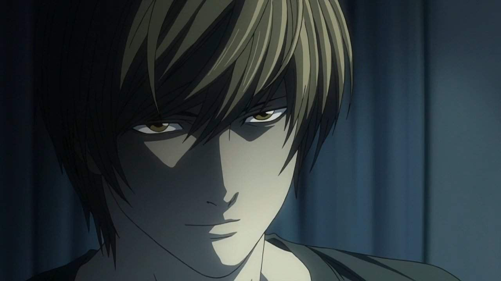

Цитаты из аниме
Цитата дня
“Я стану Королем Пиратов!”

“Извините за опоздание, я заблудился на дороге под названием жизнь.” — Какаши Хатаке (Naruto, 1 сезон, 21 серия)

“Я бы с удовольствием пригласил тебя зайти и выпить, но боюсь, что ты согласишься.” — Джирайя (Naruto)

“Настоящий мужчина плачет только в трёх случаях: когда он рождается, когда он умирает и когда забивает решающий гол!” — Saitama (One Punch Man) - хотя немного иронично

“Человек, который пытается кому-либо подражать, всё равно делает это по-своему! Никто не может скрыть свою натуру и привычки!” — L (Death Note)

“Если бы мы встретились в другом месте и в другое время, мы бы стали друзьями.” — Наруто Узумаки (Naruto, 1 сезон, 18 серия)

“Ох, уж эти подростки! Думают, что главное — иметь побольше друзей. Достаточно и одного. Одного-единственного, но своего.” — Ято (Noragami, 8 серия)

“Я отказываюсь от твоего отказа!” — Монки Д. Луффи (One Piece)
“Не бывает безвыходных ситуаций… Тебе просто нужно умереть раньше, чем они тебя убьют.” — L (Death Note, 1 сезон, 18 серия)
“Никогда не сдаваться… Встать, когда все рухнуло — вот настоящая сила.” — Наруто Узумаки (Naruto)
“Нельзя выиграть, если ты только защищаешься. Чтобы выиграть, нужно идти в атаку.” — Лайт Ягами (Death Note, 1 сезон, 10 серия)
